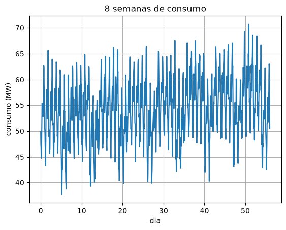
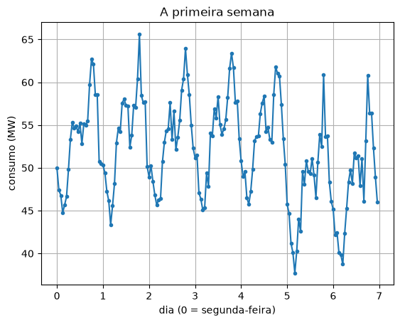
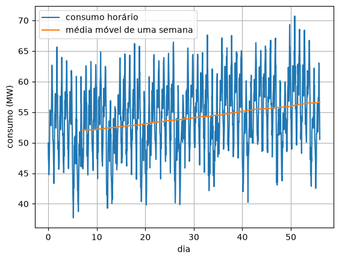
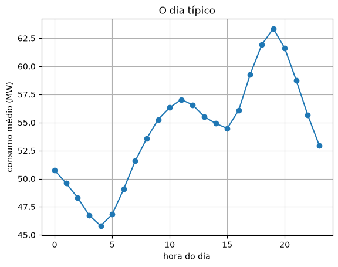

15. Séries temporais¶
Uma série temporal é uma sequência de medições no tempo, em intervalos regulares: o consumo de energia de hora em hora, a temperatura de mês a mês, o tráfego de uma rede de minuto a minuto, as vendas de uma loja por dia. Ela tem uma particularidade que as tabelas das unidades anteriores não tinham: a ordem importa, e o valor de agora depende dos anteriores.
A pergunta mais comum sobre uma série é "e o próximo?". Quanta energia a cidade vai consumir na semana que vem; quanto tráfego o link vai ter no horário de pico. Este capítulo decompõe uma série nas suas partes (tendência, ciclos e ruído) com as ferramentas que você já tem, e usa essas partes para prever e para medir o quanto a previsão erra.
Uma série temporal¶
🌍 Contexto: o consumo de energia de uma cidade
O operador do sistema elétrico precisa prever o consumo com antecedência: as usinas
levam horas para mudar a produção, e energia elétrica, em grande quantidade, não se
guarda. Um erro de previsão para baixo pode causar apagão; para cima, desperdício. O
arquivo consumo_energia.csv tem 8 semanas do consumo, em megawatts, de uma cidade
pequena, de hora em hora.
# Consumo de energia de uma cidade pequena (MW), de hora em hora, por 8 semanas.
import numpy as np
import matplotlib.pyplot as plt
dados = np.loadtxt("consumo_energia.csv", delimiter=",", skiprows=1)
hora = dados[:, 0]
consumo = dados[:, 1]
print(f"{len(consumo)} horas = {len(consumo) / 24:.0f} dias")
print(f"de {np.min(consumo):.1f} a {np.max(consumo):.1f} MW, media {np.mean(consumo):.1f} MW")
plt.figure()
plt.plot(hora / 24, consumo)
plt.xlabel("dia")
plt.ylabel("consumo (MW)")
plt.title("8 semanas de consumo")
plt.grid()
plt.show()
plt.figure()
plt.plot(hora[:168] / 24, consumo[:168], ".-")
plt.xlabel("dia (0 = segunda-feira)")
plt.ylabel("consumo (MW)")
plt.title("A primeira semana")
plt.grid()
plt.show()


Olhando com atenção, a série tem quatro partes somadas:
- uma tendência: o consumo cresce devagar ao longo das semanas;
- um ciclo diário: vale de madrugada, pico no começo da noite;
- um ciclo semanal: sábado e domingo consomem menos;
- ruído: o que sobra, que não se prevê.
Separar essas partes é o primeiro passo de qualquer previsão.
Média móvel¶
A média móvel troca cada ponto pela média de uma janela de pontos em volta dele. Com uma janela do tamanho de um ciclo, o ciclo some: as horas altas e baixas se compensam dentro da janela, e sobra o que muda mais devagar.
# Media movel: cada ponto vira a media das horas da janela que termina nele.
# Com uma janela de uma semana (168 h), os ciclos do dia e da semana somem, e
# sobra o que muda mais devagar: a tendencia.
import numpy as np
import matplotlib.pyplot as plt
dados = np.loadtxt("consumo_energia.csv", delimiter=",", skiprows=1)
hora = dados[:, 0]
consumo = dados[:, 1]
janela = 168
media = np.zeros(len(consumo) - janela + 1)
for i in range(len(media)):
media[i] = np.mean(consumo[i:i + janela]) # as 168 horas a partir de i
plt.figure()
plt.plot(hora / 24, consumo, label="consumo horário")
plt.plot(hora[janela - 1:] / 24, media, label="média móvel de uma semana")
plt.xlabel("dia")
plt.ylabel("consumo (MW)")
plt.grid()
plt.legend()
plt.show()
print(f"media movel: comeca em {media[0]:.1f} MW e termina em {media[-1]:.1f} MW")

Com uma janela de uma semana (168 horas), somem os dois ciclos, o do dia e o da semana, e a média móvel mostra a tendência: de 52,1 para 56,6 MW em 7 semanas. É o mesmo remédio que os boletins de saúde usam para os casos novos de uma doença (a média móvel de 7 dias do capítulo 3): tirar o ciclo semanal para ver a tendência.
Tendência¶
Para medir a tendência em números, a média de cada dia apaga o ciclo diário, e uma reta de mínimos quadrados (capítulo 13) pelas médias diárias dá o crescimento.
# A tendencia: a media de cada dia, e uma reta por essas medias.
import numpy as np
dados = np.loadtxt("consumo_energia.csv", delimiter=",", skiprows=1)
consumo = dados[:, 1]
n_dias = len(consumo) // 24
dia = np.zeros(n_dias)
media_dia = np.zeros(n_dias)
for d in range(n_dias):
dia[d] = d
media_dia[d] = np.mean(consumo[24 * d:24 * d + 24])
coef = np.polyfit(dia, media_dia, 1)
print(f"tendencia: {coef[0]:.3f} MW por dia ({coef[0] * 365:.0f} MW por ano, se continuar)")
print("media dos 7 primeiros dias:", np.round(media_dia[:7], 1))
tendencia: 0.079 MW por dia (29 MW por ano, se continuar)
media dos 7 primeiros dias: [53.3 53.9 53.5 54. 53.7 47.9 48.2]
A cidade consome 0,079 MW a mais por dia, cerca de 29 MW a mais por ano se o ritmo continuar: mais da metade do consumo de hoje. É o tipo de número que faz uma distribuidora planejar uma subestação nova.
Sazonalidade¶
O ciclo diário e o semanal são a sazonalidade (a palavra vem das estações do ano, o
ciclo mais antigo que se mediu). O "dia típico" é a média de cada hora do dia em todos
os dias: a média de todas as 0 h, de todas as 1 h, e assim por diante. Com a fatia com
passo do capítulo 11,
consumo[h::24] pega a hora h de todos os dias.
# Sazonalidade: o "dia tipico" (a media de cada hora do dia, em todos os dias)
# e a "semana tipica" (a media de cada dia da semana).
import numpy as np
import matplotlib.pyplot as plt
dados = np.loadtxt("consumo_energia.csv", delimiter=",", skiprows=1)
consumo = dados[:, 1]
perfil_hora = np.zeros(24)
for h in range(24):
perfil_hora[h] = np.mean(consumo[h::24]) # a hora h de todos os dias
perfil_semana = np.zeros(7)
n_dias = len(consumo) // 24
for s in range(7):
medias = []
for d in range(s, n_dias, 7): # todas as segundas, todas as tercas...
medias.append(np.mean(consumo[24 * d:24 * d + 24]))
perfil_semana[s] = np.mean(medias)
print(f"hora de maior consumo: {np.argmax(perfil_hora)} h ({np.max(perfil_hora):.1f} MW)")
print(f"hora de menor consumo: {np.argmin(perfil_hora)} h ({np.min(perfil_hora):.1f} MW)")
print("media por dia da semana (seg a dom):", np.round(perfil_semana, 1))
plt.figure()
plt.plot(range(24), perfil_hora, "o-")
plt.xlabel("hora do dia")
plt.ylabel("consumo médio (MW)")
plt.title("O dia típico")
plt.grid()
plt.show()
hora de maior consumo: 19 h (63.4 MW)
hora de menor consumo: 4 h (45.8 MW)
media por dia da semana (seg a dom): [55.6 55.8 56. 56. 56.2 50. 50.4]

O pico é às 19 h (chuveiros e iluminação, quando as pessoas chegam em casa), e o vale, às 4 h. Os dias úteis consomem cerca de 56 MW; sábado e domingo, uns 50 MW.
No quadro: a suavização exponencial¶
A média móvel dá o mesmo peso a todos os pontos da janela e peso zero aos de fora. Uma alternativa mais simples de calcular, muito usada em previsão, dá peso maior aos dados mais recentes.
🧑🏫 No quadro — a suavização exponencial simples
1. A previsão nova é uma mistura do valor que acabou de chegar com a previsão anterior, com um peso \(\alpha\) entre 0 e 1:
2. Substituindo \(\hat y_t\) pela mesma fórmula, e de novo, e de novo:
3. É uma média de todo o passado, com pesos que caem geometricamente: o dado de ontem pesa \(\alpha\), o de anteontem \(\alpha(1-\alpha)\), e assim por diante. Daí o nome "exponencial".
4. \(\alpha\) perto de 1: a previsão segue o último dado (reage rápido, mas treme com o ruído). \(\alpha\) perto de 0: lembra de muito tempo atrás (estável, mas lenta). E, para calcular, basta guardar um número.
# Suavizacao exponencial: a previsao nova e uma mistura da previsao anterior com
# o valor que acabou de chegar. alpha perto de 1: segue o ultimo dado; perto de 0:
# lembra de muito tempo atras.
import numpy as np
dados = np.loadtxt("consumo_energia.csv", delimiter=",", skiprows=1)
consumo = dados[:, 1]
n_dias = len(consumo) // 24
media_dia = np.zeros(n_dias)
for d in range(n_dias):
media_dia[d] = np.mean(consumo[24 * d:24 * d + 24])
for alpha in [0.1, 0.5, 0.9]:
previsao = media_dia[0]
erros = []
for d in range(1, n_dias):
erros.append(abs(previsao - media_dia[d])) # erro da previsao para o dia d
previsao = alpha * media_dia[d] + (1 - alpha) * previsao
print(f"alpha = {alpha}: erro medio {np.mean(erros):.2f} MW, previsao para amanha {previsao:.1f} MW")
alpha = 0.1: erro medio 2.71 MW, previsao para amanha 55.6 MW
alpha = 0.5: erro medio 2.49 MW, previsao para amanha 53.9 MW
alpha = 0.9: erro medio 1.91 MW, previsao para amanha 52.7 MW
Para as médias diárias desta cidade, \(\alpha = 0{,}9\) erra menos: o consumo de um dia se parece muito com o do dia anterior. Mas a queda do fim de semana engana qualquer \(\alpha\): a suavização simples não sabe nada de ciclos.
Prever e medir o erro¶
Para comparar métodos de previsão com honestidade, a série é cortada: as 7 primeiras semanas são o treino (o que o método pode ver) e a última é o teste (o que ele tenta prever, sem ver). Dois números resumem o erro:
- MAE (erro absoluto médio): \(\frac{1}{n}\sum |\hat y_i - y_i|\), "quanto se erra, em média", na unidade dos dados;
- RMSE (raiz do erro quadrático médio): \(\sqrt{\frac{1}{n}\sum (\hat y_i - y_i)^2}\), que pune mais os erros grandes.
# Prever a ultima semana (a de teste) usando so as 7 primeiras (as de treino),
# e medir o erro de cada metodo.
import numpy as np
dados = np.loadtxt("consumo_energia.csv", delimiter=",", skiprows=1)
consumo = dados[:, 1]
treino = consumo[:7 * 168]
teste = consumo[7 * 168:]
def mae(previsto, real):
return np.mean(abs(previsto - real))
def rmse(previsto, real):
return np.sqrt(np.mean((previsto - real)**2))
# 1) ingenuo: a ultima hora conhecida, repetida a semana toda
ingenuo = np.zeros(168) + treino[-1]
# 2) sazonal: a mesma hora da semana passada
sazonal = treino[-168:]
# 3) sazonal + tendencia: a semana passada, somando o crescimento de uma semana
coef = np.polyfit(np.linspace(0, len(treino) - 1, len(treino)), treino, 1)
com_tendencia = treino[-168:] + coef[0] * 168
print("metodo MAE (MW) RMSE (MW)")
print(f"ingenuo {mae(ingenuo, teste):9.2f} {rmse(ingenuo, teste):9.2f}")
print(f"sazonal (semana) {mae(sazonal, teste):9.2f} {rmse(sazonal, teste):9.2f}")
print(f"sazonal + tendencia {mae(com_tendencia, teste):9.2f} {rmse(com_tendencia, teste):9.2f}")
metodo MAE (MW) RMSE (MW)
ingenuo 6.42 7.80
sazonal (semana) 1.84 2.31
sazonal + tendencia 1.77 2.19
💥 Quebre o método
O método ingênuo (repetir o último valor conhecido) erra 6,4 MW em média: ele ignora que amanhã às 19 h vai ter pico. Só copiar a mesma hora da semana passada (o método sazonal) derruba o erro para 1,8 MW, sem conta nenhuma. Somar a tendência melhora mais um pouco. A lição é que um método simples que respeita os ciclos da série bate um método que os ignora. E a regra de sempre: um método só pode ser avaliado em dados que ele não viu (o teste), como no sobreajuste do capítulo 14.
Mesmo método, outra área¶
🌍 Contexto: a temperatura mês a mês
As normais climatológicas são as médias de temperatura de cada mês do ano, medidas ao longo de décadas. O ciclo é anual: 12 meses. Em João Pessoa, a variação é pequena (de 25 a 28 °C), com o inverno em julho.
# Mesmo metodo, outra area: clima. Temperatura media mensal (°C) em Joao Pessoa,
# tres anos (valores ilustrativos, perto das normais climatologicas).
import numpy as np
temperatura = np.array([27.6, 27.8, 27.6, 27.3, 26.6, 25.7, 25.1, 25.2, 25.9, 26.6, 27.0, 27.3,
27.8, 28.0, 27.9, 27.4, 26.8, 25.8, 25.3, 25.3, 26.0, 26.8, 27.2, 27.6,
28.0, 28.1, 28.0, 27.7, 26.9, 26.1, 25.4, 25.6, 26.2, 26.9, 27.4, 27.7])
treino = temperatura[:24]
teste = temperatura[24:]
sazonal = treino[12:] # o mesmo mes do ano passado
perfil = (treino[:12] + treino[12:]) / 2 # a media de cada mes nos dois anos
print(f"MAE sazonal (ano passado): {np.mean(abs(sazonal - teste)):.2f} °C")
print(f"MAE perfil medio: {np.mean(abs(perfil - teste)):.2f} °C")
O mesmo método sazonal, com o ciclo de 12 meses no lugar do de 168 horas, prevê a temperatura do terceiro ano a partir do segundo com erro de 0,17 °C. O "perfil médio" dos dois anos anteriores erra mais (0,27 °C), porque mistura um ano mais frio: a série tem uma tendência de aquecimento, e o dado mais recente carrega mais dela.
Erros comuns deste capítulo¶
| Sintoma | Causa provável |
|---|---|
| a média móvel ainda oscila | a janela não tem o tamanho de um ciclo inteiro (use 24 para o dia, 168 para a semana) |
| a média móvel tem menos pontos que a série | é da natureza dela: cada ponto precisa de uma janela inteira |
| o método "perfeito" no treino erra muito no teste | avaliou no treino, ou usou dados do futuro para prever o passado |
| o perfil diário fica deslocado | a série não começa à 0 h, ou tem horas faltando: confira a posição de cada hora |
| comparar MAE com RMSE | medem coisas diferentes; o RMSE é sempre maior ou igual ao MAE |
Onde isso é usado de verdade¶
- Setor elétrico: o Operador Nacional do Sistema (ONS) prevê a carga de hora em hora para decidir quais usinas ligar.
- Telecomunicações: o dimensionamento de links e de servidores usa a previsão do tráfego no horário de pico; os ciclos diário e semanal são exatamente os deste capítulo.
- Varejo e logística: previsão de vendas para montar estoques (com o ciclo semanal e o de datas como Natal e Black Friday).
- Saúde pública: vigilância de epidemias com médias móveis e detecção de surtos quando a série foge do esperado.
- Economia: inflação, desemprego e produção industrial são publicados "com ajuste sazonal", exatamente a remoção dos ciclos feita aqui.
Resumo¶
- Uma série temporal se decompõe em tendência, sazonalidade (ciclos) e ruído.
- A média móvel com janela de um ciclo inteiro apaga o ciclo e mostra a tendência.
- A tendência se mede com uma reta pelas médias de cada período; a sazonalidade, com o perfil médio de cada posição do ciclo.
- A suavização exponencial prevê com uma média do passado de pesos decrescentes, guardando um número só.
- Previsões se comparam no teste, com MAE e RMSE. Um método que respeita os ciclos (o sazonal) costuma bater métodos que os ignoram.
Para praticar¶
A Lista 15 tem uma média móvel e uma suavização à mão (✏️), o MAE e o RMSE, o perfil de um ciclo e a previsão do tráfego de uma rede.